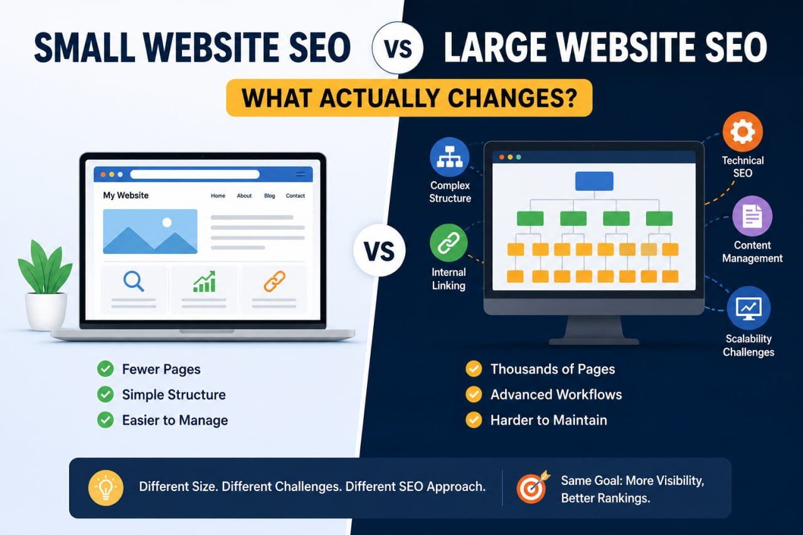
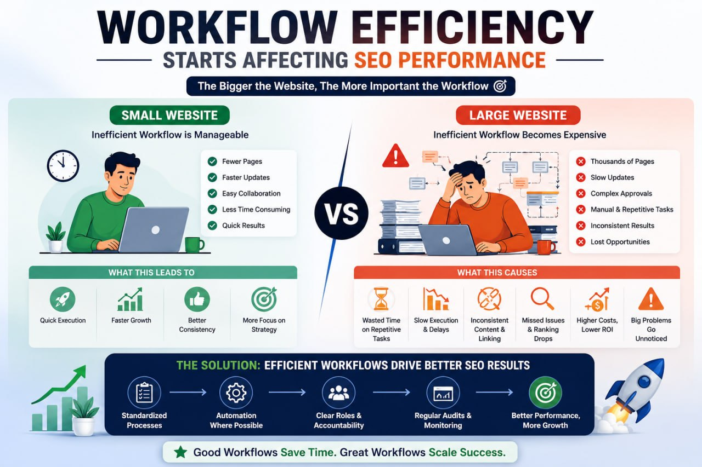

- When people first start learning SEO, most advice sounds relatively simple.
- Write quality content. Optimize your titles. Build internal links. Improve page speed. Target the right keywords.
- And honestly, on smaller websites, that advice is usually enough to make noticeable progress.
- A website with 20 or 30 pages is still easy to manage. You can remember which articles were recently published, which pages need updates, and where important internal links are placed. Even if the workflow is slightly unorganized, the site remains manageable because everything is still visible.
- But SEO changes quietly once a website starts growing.
- The same process that worked comfortably on a smaller site begins creating problems at scale. Content becomes harder to track. Internal linking starts losing structure. Technical issues become more difficult to notice. Updating older pages suddenly feels like a large project instead of a quick task.
- This is the point where small website SEO and large website SEO become completely different environments.
- Many people assume larger websites simply require "more SEO".
- In reality, large websites require a different way of managing SEO entirely.
Small Websites Are Simpler to Control
One of the biggest advantages small websites have is clarity.
1. Everything remains visible.
A site owner usually understands the structure of the website naturally because there are fewer moving parts. Important pages are easier to track. Publishing quality stays more consistent because fewer people are involved in the process.
2. Even mistakes are easier to identify.
If a new article has weak formatting or missing metadata, it gets noticed quickly. If an internal link is missing, it is usually fixed without much effort. Smaller websites rarely suffer from the same level of structural chaos that larger websites experience over time.
3. This simplicity creates a hidden advantage.
Small websites often move faster because decisions happen faster. Updating content, changing layouts, reorganizing categories, or improving navigation usually takes hours instead of weeks.
4. That flexibility becomes extremely valuable during the early growth stage of a website.
Interestingly, many smaller websites outperform larger competitors not because they have more authority, but because they maintain better consistency and cleaner organization.
Large Websites Become More Difficult to Manage
As websites grow, SEO slowly becomes less about individual pages and more about systems.
1. This shift catches many people by surprise.
At first, adding more pages feels positive because growth usually means more opportunities to rank. But after a certain point, the website itself becomes harder to control.
A page published six months ago may stop receiving internal links. Older articles may slowly become outdated without anyone noticing. Some sections of the site may expand rapidly while others remain neglected for long periods.
These problems are common on large websites because visibility decreases as scale increases.
2. The challenge is no longer simply "creating content".
The challenge becomes maintaining structure across hundreds or even thousands of URLs.
That is why experienced SEO teams focus heavily on workflows and operational systems. Without structure, large websites slowly become disorganized, even if the content itself is decent.
This is one of the biggest differences between beginner SEO and professional SEO environments. Professional teams spend a significant amount of time managing processes behind the scenes because large websites cannot survive on random workflows for very long.
Internal Linking Changes Completely at Scale
Internal linking feels easy on smaller websites because relationships between pages remain obvious.
You usually know which articles connect naturally. You remember where important service pages are located. Creating contextual links happens almost automatically because the website is still small enough to understand mentally.
But this changes dramatically once a website becomes large.
At scale, pages slowly begin disconnecting from each other.
An article that once performed well may stop receiving visibility because newer content pushes it deeper into the site structure. Important pages may receive inconsistent anchor text. Some categories may become overloaded with links while other sections remain isolated entirely.
These problems usually appear gradually.
Gradual decline is what makes them dangerous.
Large websites rarely break overnight. Instead, structural inefficiencies slowly accumulate until rankings and crawl efficiency begin suffering over time.
This is why internal linking reviews become much more important on larger websites. Strong SEO teams regularly audit content relationships because maintaining structure becomes part of maintaining rankings themselves.
Content Quality Becomes Harder to Maintain
Publishing quality content consistently is difficult for any website.
But maintaining quality across hundreds of pages is a completely different challenge.
Smaller websites usually have a more unified voice because fewer people contribute to the content process. Large websites often involve multiple writers, editors, SEO specialists, and publishing schedules spread across long periods of time.
Over time, inconsistency naturally appears.
Some articles may feel outdated. Others may target keywords well but fail to satisfy modern search intent. Certain pages may still rank despite offering a weak user experience compared to newer competitors.
This creates a common problem on large websites: uneven quality.
And uneven quality becomes increasingly important as Google improves its ability to evaluate content usefulness.
That is why modern SEO teams spend far more time reviewing and improving existing content than many beginners expect.
Large-scale SEO is no longer only about publishing more pages. It is also about maintaining the quality of everything already published.
Technical SEO Becomes More Important on Larger Websites
Many technical SEO issues remain relatively harmless on smaller websites because there are fewer pages involved.
But large websites amplify technical problems quickly.
A small indexing issue affecting ten pages is manageable. The same issue affecting thousands of URLs becomes a serious visibility problem.
This is why technical SEO usually becomes more important as websites scale. Large websites often deal with:
- Duplicate pages
- Crawl inefficiencies
- Redirect chains
- Orphan URLs
- Slow-loading templates
- Inconsistent indexing behavior
The difficult part is that many of these issues develop quietly in the background. Website owners often notice traffic declines before realizing structural problems have been building for months.
This is one reason enterprise-level SEO feels very different from smaller-site SEO. At larger scales, maintaining technical health becomes an ongoing operational responsibility rather than an occasional cleanup task.
Workflow Efficiency Starts Affecting SEO Performance

One of the most overlooked differences between small and large website SEO is workflow efficiency.
On smaller websites, inefficient processes are frustrating but survivable.
On larger websites, inefficiency becomes expensive.
Simple tasks start consuming huge amounts of time when repeated across hundreds of pages:
- Reviewing content manually becomes exhausting.
- Publishing reviews take longer.
- Updating metadata across large sections of the site becomes difficult without structured systems.
This is why experienced SEO teams care so much about operational efficiency. Not because they want shortcuts, but because efficient workflows allow more time for meaningful SEO decisions.
The larger a website becomes, the more important workflow quality becomes behind the scenes.
This is also why many professional SEO environments rely heavily on organized review systems, audit processes, and tools that reduce repetitive manual work during large-scale content management.
Review large URL batches with ease
Paste multiple links or import spreadsheets to inspect audit lists quickly in separate tabs.
SEO Priorities Change as Websites Grow
Smaller websites usually focus on expansion. The goal is often straightforward:
- Publish more content
- Target more keywords
- Gain visibility
- Grow traffic as quickly as possible
Large websites think differently. Once scale exists, the challenge shifts toward maintenance and consistency.
Instead of asking: “What should we publish next?” Large websites often ask:
- "What existing sections need improvement?"
- "Which pages are losing quality?"
- "Where is the structure weakening?"
- "What content should be updated instead of replaced?"
This difference is extremely important. Many large websites already possess enough content and authority to perform well. Their challenge is maintaining organizational quality as the site continues expanding.
That is why large-scale SEO often involves significantly more auditing, updating, consolidating, and restructuring than beginners expect.
Final Thoughts
The biggest difference between small website SEO and large website SEO is not simply traffic, page count, or authority.
It is complexity.
- Small websites benefit from visibility, flexibility, and simplicity
- Large websites require systems, workflows, operational consistency, and continuous maintenance to remain effective over time.
And interestingly, many websites struggle not because their SEO strategy is weak, but because their processes stop scaling properly as the site grows.
That is why experienced SEO professionals spend so much time improving workflows behind the scenes. Because once websites become large enough, successful SEO depends just as much on organization and operational efficiency as it does on rankings themselves.